Если вы часто чувствуете тревогу, усталость, сухость, нехватку опоры
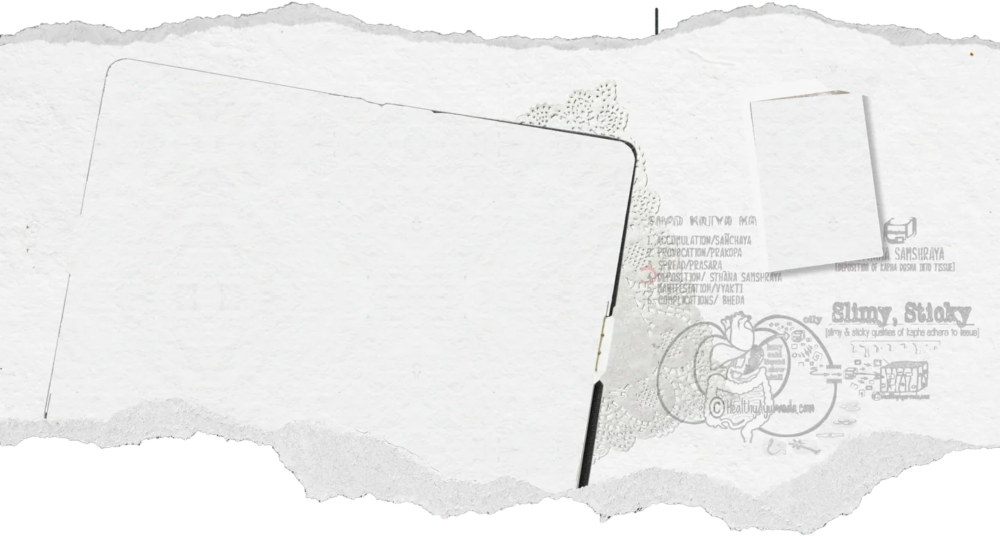
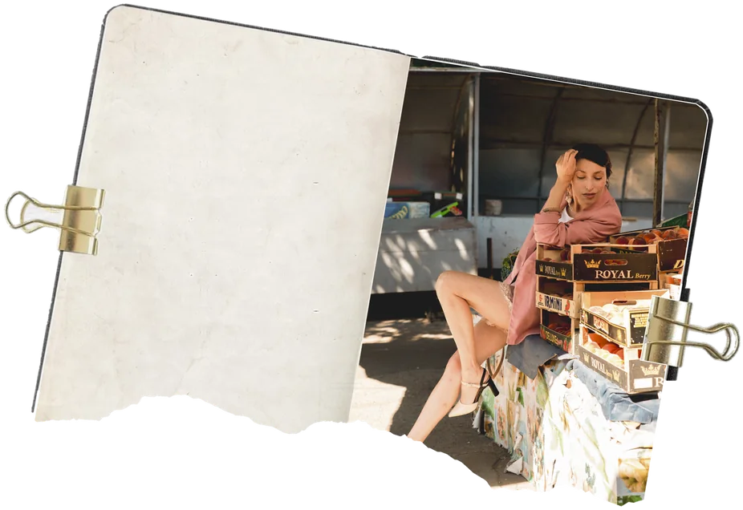
Обо мне
Меня зовут Дарья Агеенко.
Уже более 10 лет моя работа связана с телом, здоровьем и естественной красотой.
Мой профессиональный путь начался в медицине: медицинское образование и практика в педиатрии и детской хирургии сформировали главное - внимательное отношение к человеку и понимание того, что здоровье всегда является системой, а не набором симптомов.
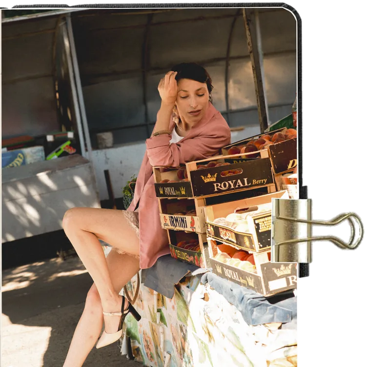
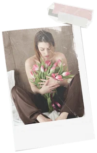
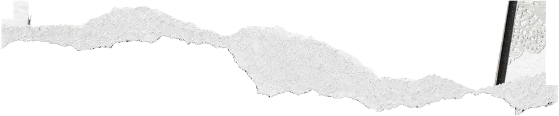
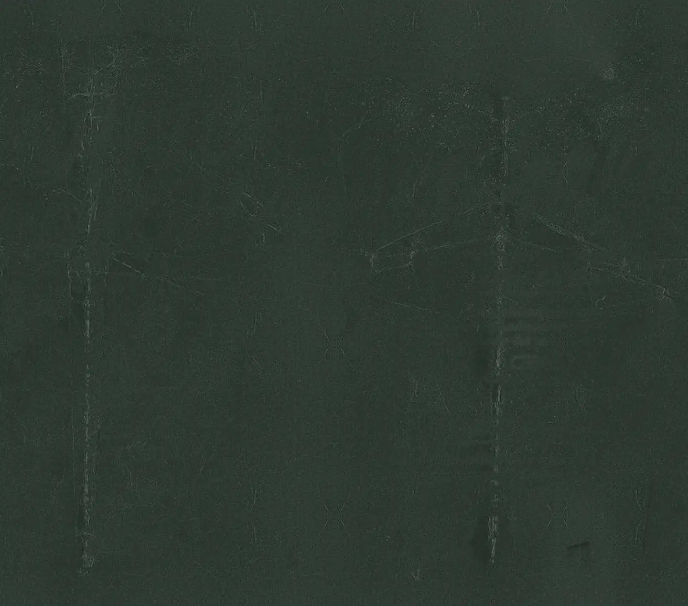
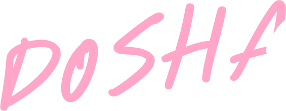
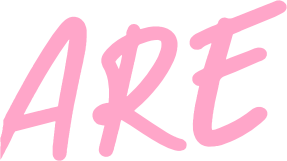
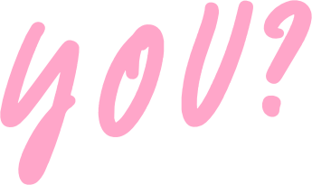
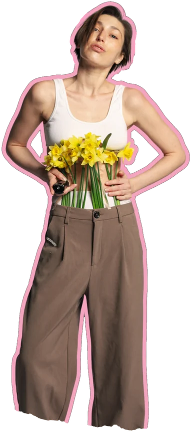
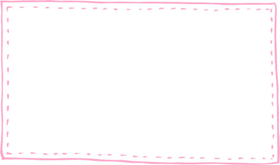

Если вам свойственны напряжение, высокая чувствительность, стремление всё контролировать

Если вы сталкиваетесь с тяжестью, замедлением, ощущением, что энергии стало меньше
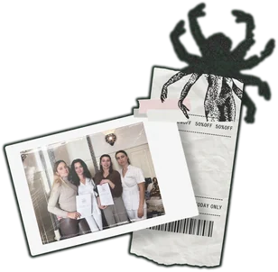
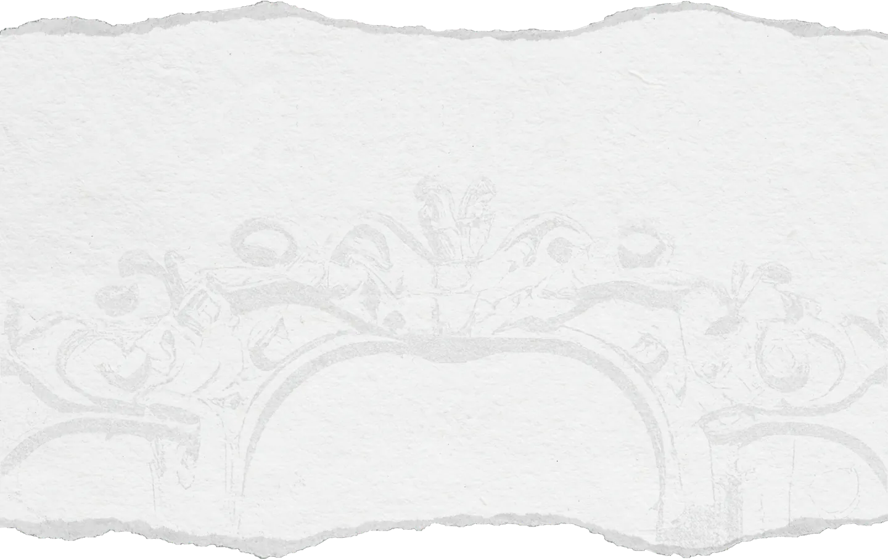
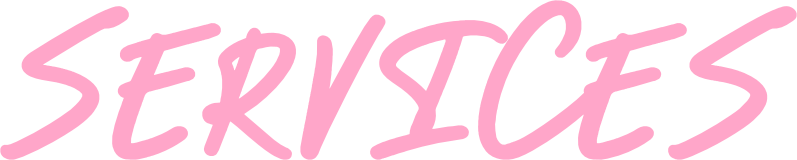
-
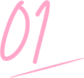
Закрытое telegram-сообщество для тех, кто выбирает не быстрые решения, а систему, которая работает в долгую.
( подробнее ) -
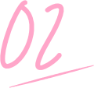
Закрытое telegram-сообщество для родителей, которые хотят понимать здоровье своего ребенка глубже.
-
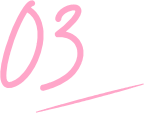
Краткое описание того, чем полезна личная консультация (подробное описание будет по кнопке “подробнее”)
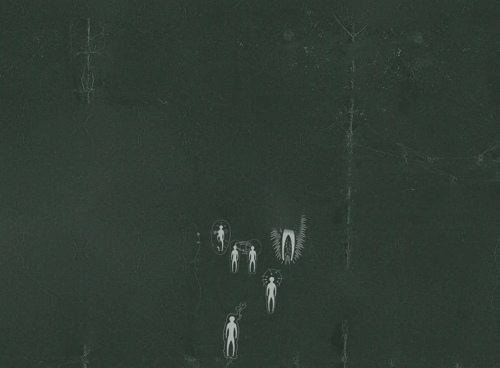

Осенний 7-дневный антимарафон – перезагрузка
- Замедлиться и выйти из режима постоянной спешки.
- Не ограничивать, а питать.
- Освободить пространство — физически и эмоционально.
- Вернуть телу то, чего ему часто не хватает больше всего, — полноценного восстановления.
- Найти свою точку равновесия.
- Снова услышать тело.
- Не возвращаться к прежнему ритму, а забрать с собой то, что действительно работает.
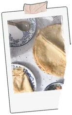
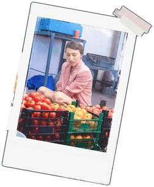
Каждый день:
- питание;
- один маленький ритуал;
- телесная практика;
- восстановление;
- короткое объяснение «почему».
7 дней не для того, чтобы «исправить себя», а для того, чтобы замедлиться,
услышать тело и вспомнить, что хорошее самочувствие начинается с правильного отношения к себе.
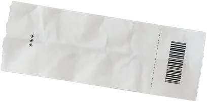
Стоимость: €29 2 800 ₽
TELEGRAM @OhhDarya написать